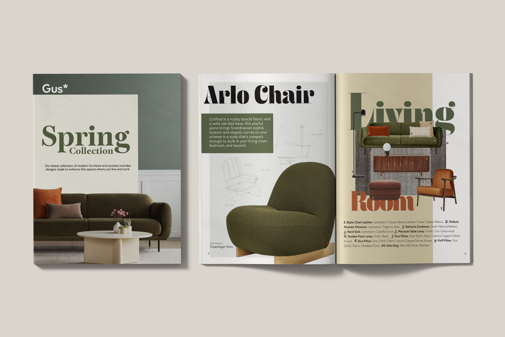
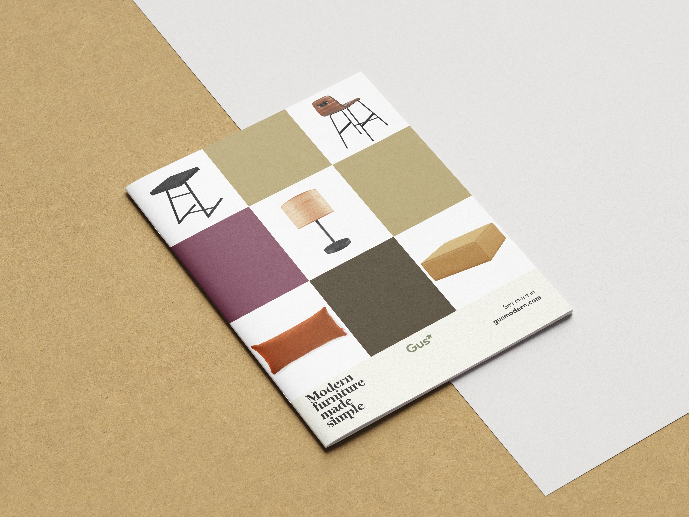
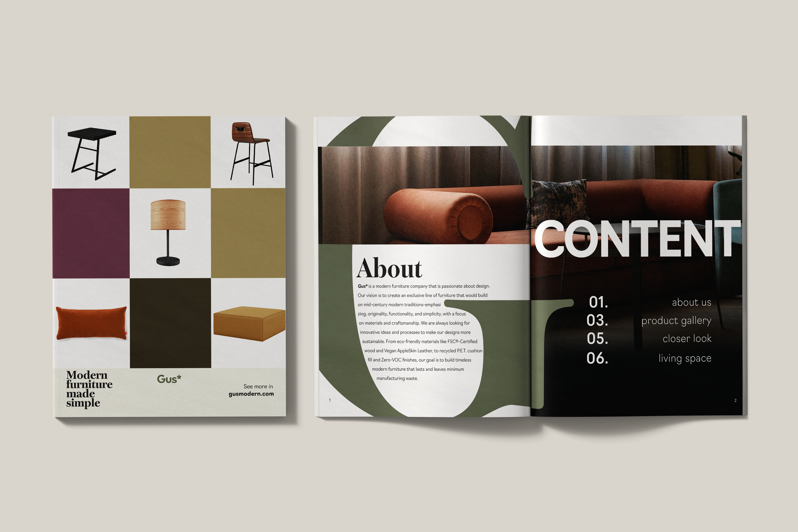

Gus
Product Catalog
October 2026
Project Overview
I created this piece for my Layout/Indesign class. The assigment was to design a product catalog for a brand.
Concept
I chose Gus, a high-end furniture store, as the brand for this project. I matched my color palette from their website and used it to bring the brand’s style into my design. My goal was to create a piece that felt like it belonged alongside the brand.
Other pieces


Medium
Adobe Indesign.